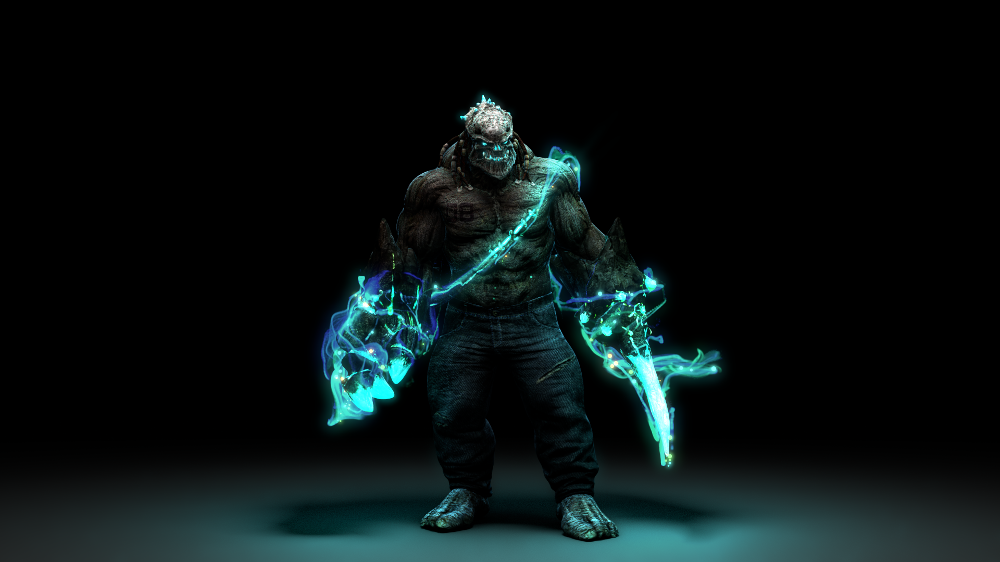

將滑鼠輕碰圖片就可以看見濾鏡效果!
1.濾鏡-亮度 2.濾鏡-反轉 3.濾鏡-對比 4.濾鏡-對比舊照片效果 5.濾鏡-模糊效果 6.濾鏡-飽和度 7.濾鏡-色相旋轉 8.濾鏡-交互使用
亮度 -webkit-filter:brightness

最上頁
反轉 -webkit-filter: invert
最上頁
對比 -webkit-filter: contrast
最上頁
舊照片效果 -webkit-filter: swpia
最上頁
模糊效果 -webkit-filter:blur
最上頁
飽和度 -webkit-filter:saturate
最上頁
色相旋轉
最上頁
濾鏡交互使用
最上頁